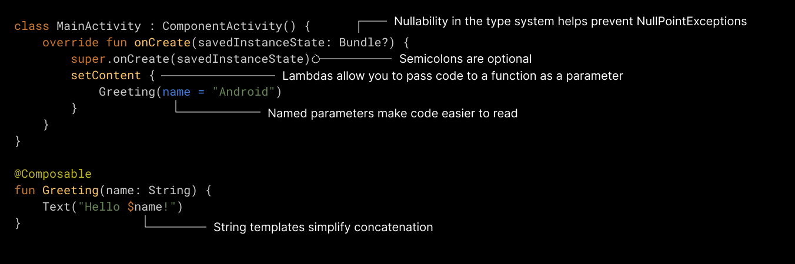

Giới thiệu Kotlin
Kotlin là một ngôn ngữ hiện đại, ngắn gọn, đa nền tảng và có khả năng tương tác với Java và các ngôn ngữ khác.
Trong hôm nay, chúng ta sẽ xem xét một số ví dụ Kotlin cơ bản nhé!!
Kotlin là gì?
Kotlin là một ngôn ngữ lập trình hiện đại, đang thịnh hành, được JetBrains phát hành vào năm 2016.
Nó trở nên rất phổ biến vì tương thích với Java (một trong những ngôn ngữ lập trình phổ biến nhất hiện nay), điều đó có nghĩa là mã Java (và các thư viện) có thể được sử dụng trong các chương trình Kotlin.
Kotlin được sử dụng cho:
- Phổ biến nhất là phát triển ứng dụng di động (đặc biệt là các ứng dụng Android)
- Phát triển web
- Ứng dụng cho các máy chủ
- Khoa học dữ liệu
- Và còn nhiều lĩnh vực khác...
Vậy tại sao nên sử dụng Kotlin?
- Kotlin hoàn toàn tương thích với Java.
- Kotlin hoạt động trên nhiều nền tảng khác nhau (Windows, Mac, Linux, Raspberry Pi, v.v.)
- Kotlin ngắn gọn và an toàn.
- Kotlin rất dễ học, đặc biệt nếu bạn đã biết Java.
- Kotlin là ngôn ngữ lập trình miễn phí.
- Cộng đồng hỗ trợ lớn.
Một ví dụ đơn giản về Kotlin
Example
fun main() {
println("Hello World")
}
println("Hello World")
}
Cấu trúc của Kotlin
